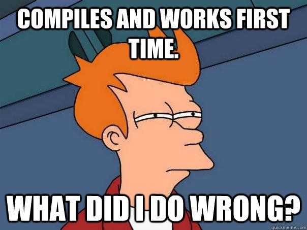

name: image layout: true class: center, middle, image --- name: title layout: true class: center, middle, image, image-white, title --- name: image-white layout: true class: center, middle, image, image-white --- name: image-last layout: true class: center, middle, image, image-last --- name: code-small layout: true class: code-small --- name: question layout: true class: center, middle, question --- name: rule layout: true class: center, middle, rule --- name: boom layout: true class: boom --- name: inverse layout: true class: center, middle, inverse --- template: title # Introduction --- layout: false ## Goals - Teaching the basics of Haskell - Start coding --- ## What is Haskell? - Strongly and statically typed language - Purely functional programming language --- ## Warning - This is _not_ about Functional Programming - Not enough time :( - Lots of good resources - https://github.com/bfpg/cis194-yorgey-lectures - https://github.com/NICTA/course --- ## Why Haskell? - Different way of thinking - Helps with other languages - Immutable by default - Less bugs - Powerful types - Less bugs - Fun! --- template: image  --- ## Stack - `GHC` is the Haskell compiler - `ghci` is the "GHC Interactive" - REPL (Read Eval Print Loop) - Similar to `python`, `ruby`, `node` - `stack` - Downloads `ghc` - Resolves package dependencies --- ## Getting started ``` > stack ghci Configuring GHCi with the following packages: haskell-in-haste GHCi, version 7.10.2: http://www.haskell.org/ghc/ :? for help ... λ> ``` --- ## Loading a file ``` > :l src/Example.hs [1 of 1] Compiling Example ( src/Example.hs, interpreted ) Ok, modules loaded: Example. > ``` --- ## Reloading a file ``` > :r [1 of 1] Compiling Example ( src/Example.hs, interpreted ) Ok, modules loaded: Example. > ``` --- template: inverse ## Next up: [Basics](02_basics.html)